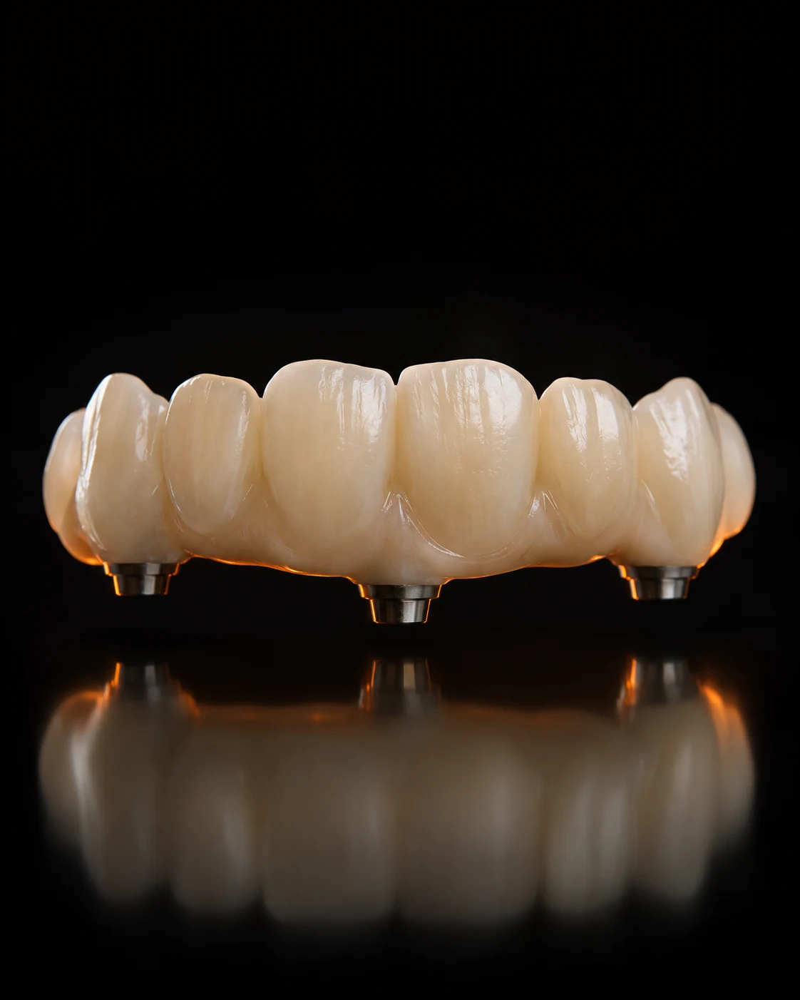
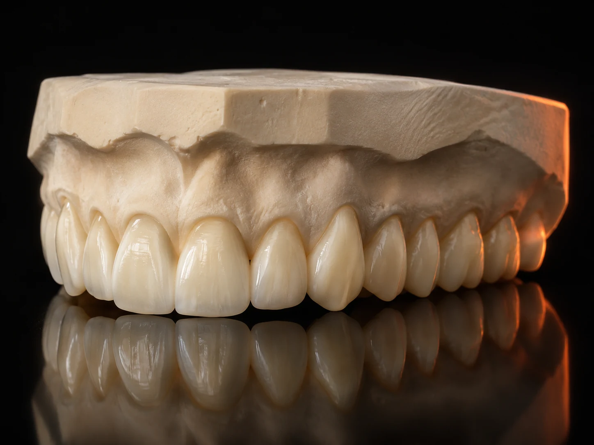
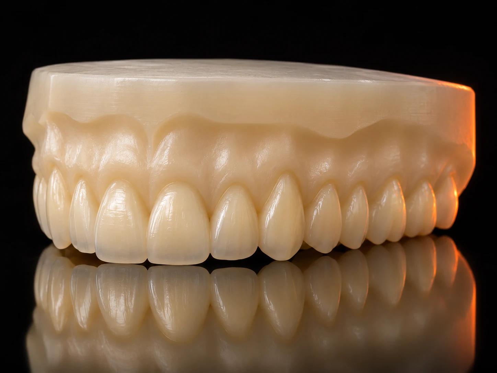
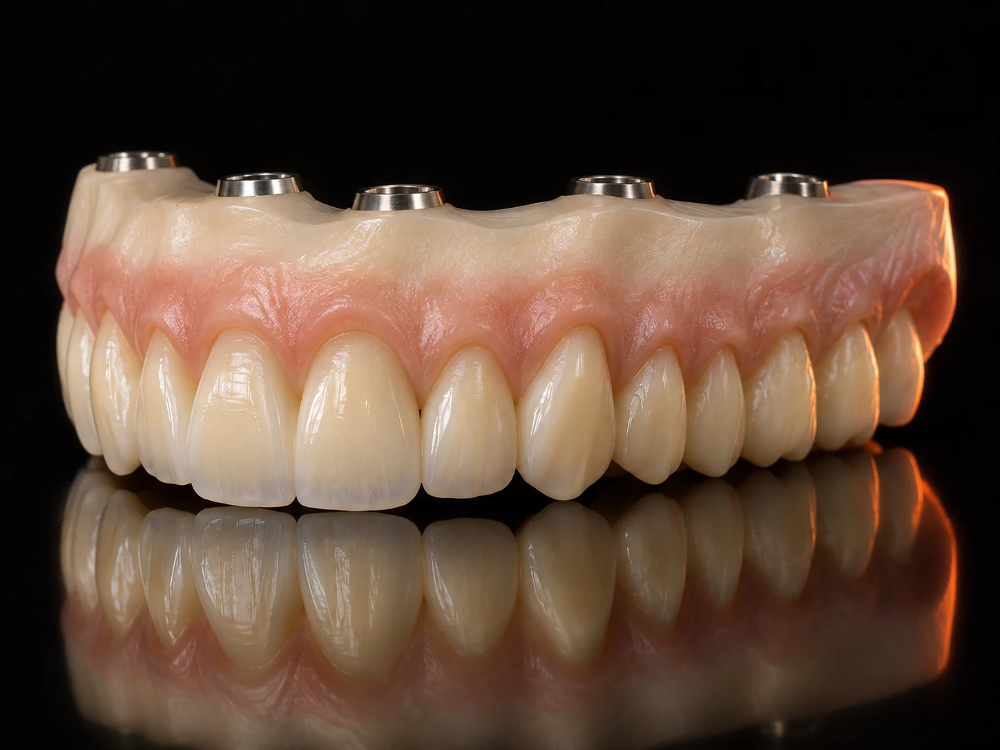
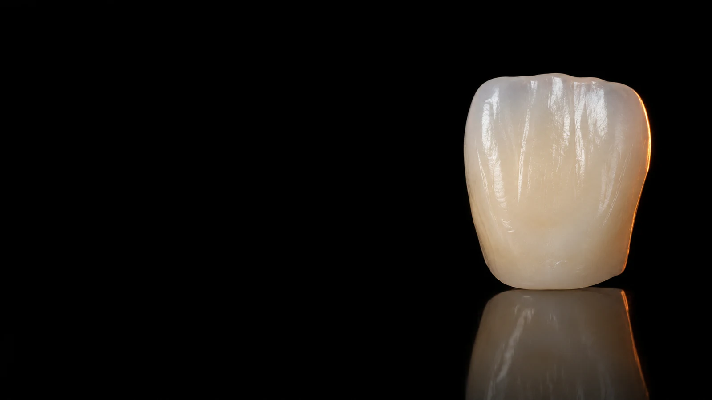
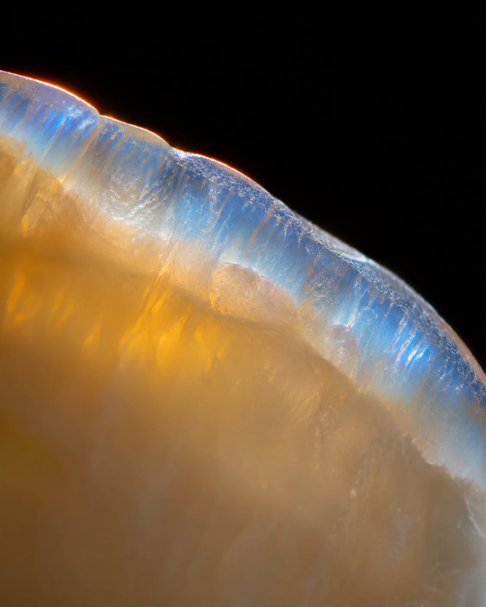
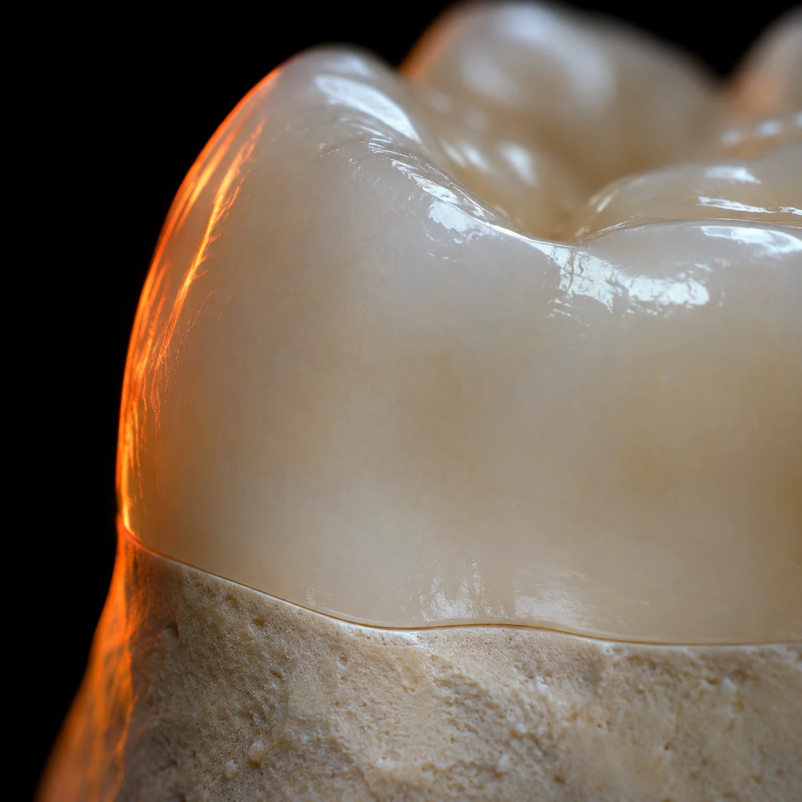

Перший кейс
- Одна робота на пробу
- Без договору на обсяг
- Оцінка посадки й естетики
- Відповідь протягом 1 години

Підключаємося з етапу імплантації чи ортодонтії й ведемо випадок разом з вами до здачі.



Те, що лікар перевіряє першим: обсяг і чи можна покластися на результат.

конструкцій виготовили
за 2025 рік
робіт здаємо
без переробок
Засновник — Opinion Leader японської GC. Власне CAD/CAM-виробництво, цифрова історія кожного пацієнта і цифровий дизайн усмішки до лікування.

Оберіть роботу й день примірки — ми плануємо виготовлення під нього.
гарантії на незнімні конструкції. Кожна робота проходить фінальний контроль до відправки.

Далі кожен скан надходить до лабораторії одним кліком. Без пошти, флешок і втрачених файлів.
Немає сканера — приймаємо відбитки. Доставка: курʼєр по місту, Нова пошта по Україні.
Допомогти з підключенням →